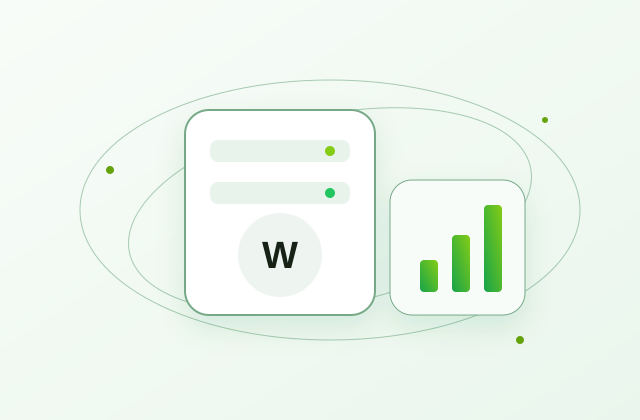

WordPress
Current WordPress + Apache/PHP application layer.
 Sprey WP Stack
Sprey WP Stack
PRODUCTION-ORIENTED
Minimal, secure, and easy to manage. WordPress + WooCommerce with Caddy, MariaDB, bounded logs, resource checks, and a clean path to BTCPay Server.


WHAT'S INSIDE
Current WordPress + Apache/PHP application layer.
Persistent LTS database on a private Docker network.
Optional admin profile, disabled by default and localhost-only.
Automatic HTTPS, HTTP/3, compression, and reverse proxy.
QUICK START
The installer prepares Docker and Docker Compose when needed, creates private credentials, preserves the active SSH port while configuring UFW, starts the stack, and enables the resource status helper.
git clone https://github.com/spreywin/sprey-wp-stack.git
cd sprey-wp-stack
sudo ./install.sh example.com admin@example.com
✓ Stack is runningOPERATIONS
Filesystem usage and inode pressure.
RAM, swap, uptime, and system load.
CPU, memory, network, and block I/O snapshot.
Images, containers, volumes, and build cache usage.
./status.sh
docker system df -vLOG SAFETY
Docker's local logging driver prevents uncontrolled default log growth.
Each container log file is capped at 10 MB.
Rotation keeps at most three files per container.
PAYMENTS & RESILIENCE
BTCPay Server remains separate from the WordPress stack. WooCommerce connects through the current BTCPay integration. The live Sprey payment service is available at pay.sprey.win ↗. The v1 design also keeps a static Cloudflare Pages outage fallback separate from the live WooCommerce origin.
DOCUMENTATION
Use the canonical Sprey Docs portal for guides and architecture, or open the source repository on GitHub.